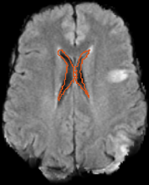

Registration of Clinical Brain Images
patch-based discrete registration of clinical brain images

Large clinical datasets hold a wealth of clinically relevant information, but their fast aquisition often results in images with sparse slices, severe artifacts, and variable fields of view. Despite significant progress in image registration, most algorithms make strong assumptions about the continuity of image data, failing when presented with clinical images that violate these assumptions. In this paper, we demonstrate a non-rigid registration method for aligning these images. The method relies on three-dimensional patches in a discrete registration framework to estimate correspondences, and explicitly models the sparsely available image information to achieve robust registration.
Project materials:
- We provide a freely available open-source implementation.
- Poster illustrating our method and results.
Adrian Dalca , Andreea Bobu, Natalia S. Rost, andPolina Golland. Patch-Based Discrete Registration of Clinical Brain Images. International Conference on Medical Image Computing and Computer Assisted Intervention, 2016 .